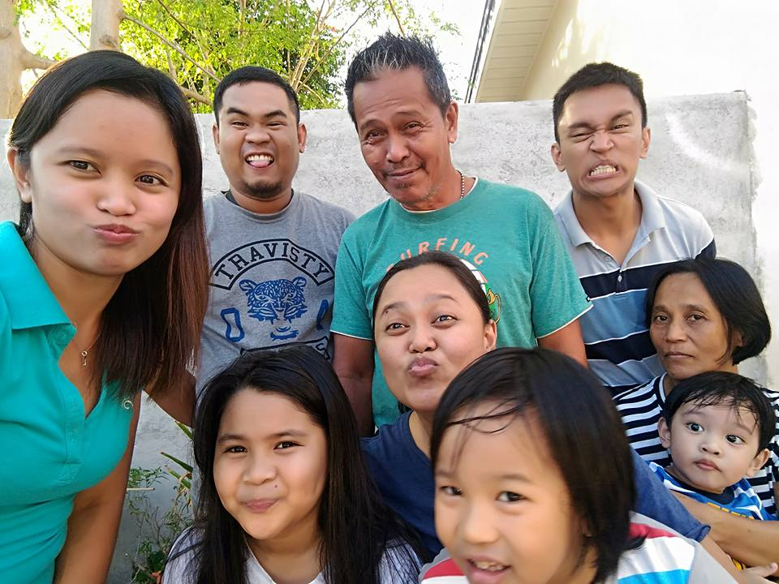
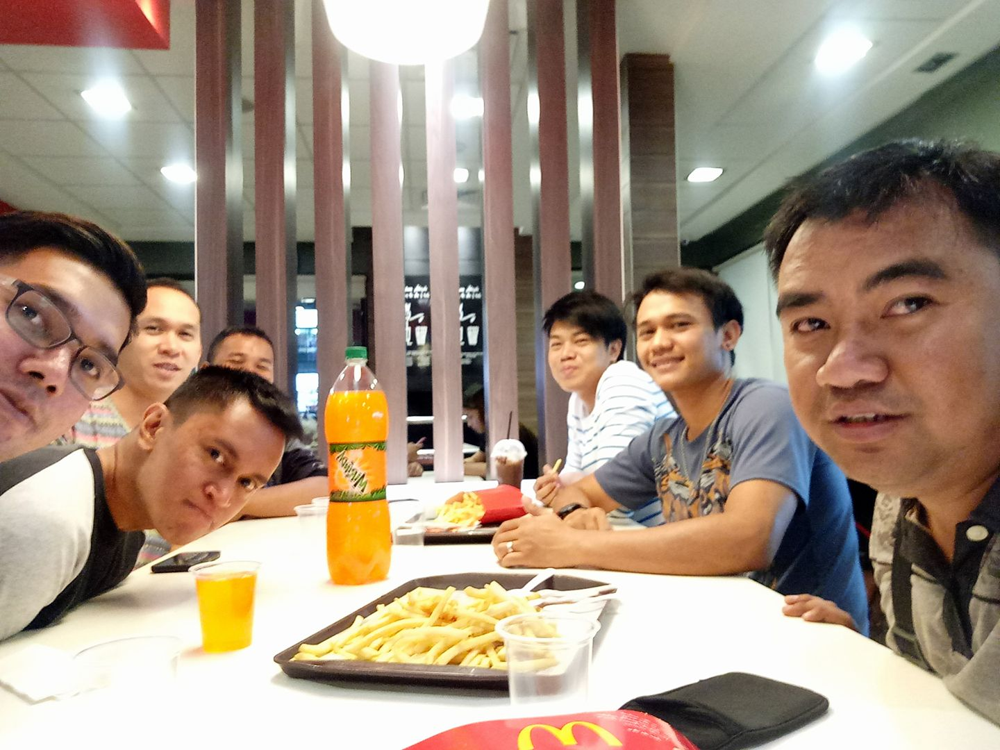

“Hi there!”
This is me
Thank you for visiting my site. I'm Ben and a Web Developer aspirant. The purpose I made this page is to put on what I've learned so far and to even learn more about web technologies. I'm currently looking for a company that is willing to give me a chance to work as a web developer even I don't have work-related programming experience. And as of the moment, I'm employed as a Call Center Representative here in Angeles, Pampanga for almost 6 years, but now is the time I am taking steps of learning to look for the career of my passion.
“About me and my...”
Profile
Image courtesy of popkey.coI started coding since the I learned programming back in my highschool days where I still remember getting 100% score for building a calculator app using Visual Basic language. Since then, I took a 2 yr college course for software programming and continue to fall in love with the concept of typing codes that results to a program. My basic skils are responsive web design using HTML5, CSS and Javascript; dynamic web design with PHP & MySQL; familiarity usage with Git version control; and using Linux as my daily driver for 6 years now.
Family
 Me on the upperright
My family is what I'm always thankful for. They are my inspiration every time I get off from bed to work and earn money or else we will have a hard time paying our bills. Hehehe.
I'm the least sibling in our family and I have 1 niece and 2 nephews I play with during my free time. My mom cooks delicous food for us while my dad fixes house stuffs even though they're are not broken.
Friends
 Victory GroupI have few friends but that is okay. The more friends you have, the more problems you also have. Just kidding. We meet at a weekly basis at our favorite fast food restaurant around Dau and discuss about Christian life and how we can encourage each other. We ocassionaly go out to celebrate a friend's birthday in a friend's house or go out for a swimming with a small budget.
“Portfolio”
-
Count the Number app
An app to help kids learn how to count numbers. It has the number and below it has the number in words so they know the correct spelling. Numbers show up randomly so kids can learn them individually and not from lowest to highest.
-
Call Logger
This is a tool for contact centers so they can log every informatin they need from their caller and copy and paste this data to their system's note logger using the most common text template.
-
PHP
PHP